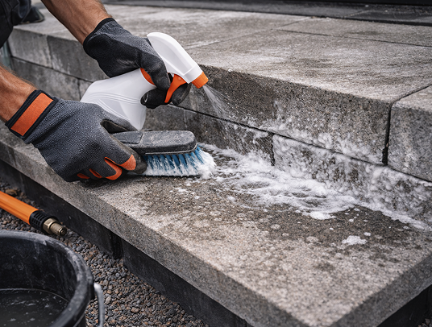

Первичные
Появляются при изготовлении в результате естественного затвердевания раствора.
Высолы — белые налеты на поверхности бетона, результат химической реакции между водой и солями в составе цемента. При контакте свободного кальция с углекислым газом образуется слаборастворимый гидрокарбонат кальция.
Важно знать:
Согласно стандартам, высолы не считаются браком. Они не влияют на прочность или морозостойкость изделий, являясь лишь временным косметическим дефектом.

Появляются при изготовлении в результате естественного затвердевания раствора.
Возникают при хранении из-за конденсата под пленкой ("парниковый эффект").
Появляются при эксплуатации под воздействием грунтовых вод и атмосферных газов.
Солевые отложения могут исчезнуть сами под дождем и снегом. Но если нужно удалить их быстрее:
Удаление щетками. Риск повредить фактурный слой бетона.
Использование препаратов на кислотной основе. Самый эффективный и безопасный метод.
Правильная укладка и защита - залог чистого фасада и дорожек
Используйте основание из песка или смеси с пониженным содержанием цемента — он главный источник солей. Обязательно предусмотрите дренаж для минимизации контакта бетона с водой.
Обеспечьте вентиляцию между поддонами. Не допускайте перепадов влажности, а также регулярного увлажнения и высыхания изделий.
Обработка составами, снижающими водопоглощение. Перед нанесением поверхность должна быть очищена от пыли и имеющихся солей.
Покрытие преобразователями на основе фторсиликатов. Они химически снижают растворимость солей внутри структуры.
Акриловые и силиконовые дисперсии создают защитную пленку, препятствующую увлажнению и выносу кальция. Могут интенсифицировать цвет изделия.
Появление высолов зависит от состава бетонной смеси, условий хранения, эксплуатации и технологии укладки. Если налёт не исчезает естественным путём, его следует удалять специальными средствами, предварительно изучив инструкцию.
Для профилактики рекомендуется обрабатывать поверхность защитными пропитками и избегать использования антигололёдных реагентов на основе соли.